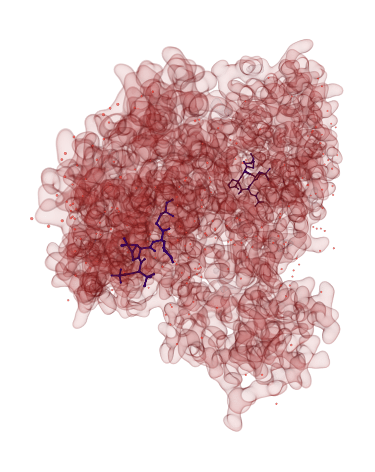

Peace, love, Paxlovid and ‘Pfizermectin’
Debunking a remarkably popular and persistent misconception about the relationship between Paxlovid and ivermectin.
![]()
As the new Omicron variant of concern of COVID-19 emerged over Thanksgiving week (of all times!), attention has been turning to Paxlovid (PF-07321332). If, like me, you torment yourself by perusing conspiracy theories, you might have heard it referred to as Pfizermectin. Behind that is the idea that the “COVID pill” Paxlovid is, basically, a re-packaging of ivermectin, a disproven treatment for COVID-19. (Popp et al. 2021)
The Pfizermectin Gambit
The Pfizermectin argument rests on the fact that Paxlovid, an oral treatment for COVID-19 (colloquially known as a “Covid pill”) is a protease inhibitor, and so is ivermectin. Consequently, so the reasoning goes, ivermectin is just as good — except it is no longer an economically viable drug, vis-a-vis Paxlovid. So, it is claimed, ivermectin was repackaged, and now sold at a premium.
So suggests, for instance, paleo-libertarian Lew Rockwell:
Biden Admin Plans ‘Imminent’ Booster Expansion; Orders 10M Courses of ‘Pfizermectin’
— Lew Rockwell ((lewrockwell?)) November 19, 2021
By Tyler Durdenhttps://t.co/IMckQeK541
The problem is… Paxlovid is not ivermectin. It is not even similar, and the difference is crucially important to why Paxlovid is likely to be an effective medication, and ivermectin won’t.
What’s different about Paxlovid
As always, there’s a kernel of truth in the overall lie. It is true that both Paxlovid and ivermectin are inhibitors of the 3-chymotrypsin like protease (3CLPro). 3CLPro is the principal protease of coronaviruses. It belongs to a wider class called mixed-nucleophile proteases superfamily A. Their main function is to find peptide bonds in proteins between glutamine on one hand and serine, glycine or alanine on the other.
To understand what’s going on here, we need to look at protein synthesis by viruses. A lot of the time, viral proteins are produced as one big, long protein called a polyprotein. Then, viral proteases break these at pre-determined cleavage sites into the constituent parts of what eventually becomes a viral particle. As far as the virus is concerned, interference with that cleavage is bad, bad news, essentially inhibiting the ability of the virus to create copies of itself that are effective infectious agents.

This ‘molecular scissor’ in coronaviruses is 3CLPro, and as such, it’s clearly a target of interest. Mody et al., in a paper that has earned its spot on my list of top 10 papers of 2021, looked at 3CLPro inhibitors, and found that around 50 µM (micromoles) of ivermectin were sufficient to achieve a 75% or so reduction in the activity of 3CLPro. (Mody et al. 2021)
However, that’s actually bad news — because 50 µM is, actually, a lot. And therein lies the problem.
The (pharmaco)kinetic difference
The problem with ivermectin is very simple. In order for an enzyme inhibitor to be effective, it needs to reach a concentration where it inhibits the target enzyme enough to make a dent in the underlying process. The standard metric for this is known as \(IC_{50}\) — the concentration of the inhibitor required to inhibit enzyme activity by 50%. This value for ivermectin is somewhere in the realm of tens of µM for 3CLPro.
One µM of ivermectin weighs around 0.0875mg, so a 1 µM solution of ivermectin would have a concentration of around 87.5 nanograms per millilitre (ng/mL). To reach even a very conservative 5µM, you would need blood levels of 437.5ng/mL.
And that’s a problem, because above 80 or so ng/mL, ivermectin is pretty toxic. (González Canga et al. 2008) To reach the lowest conceivable limit of inhibitory action on 3CLPro would require doses that are incompatible with… well, life.
The alleged ‘Pfizermectin’ achieves this efficacy at a nanomolar level – at a concentration roughly ten thousand times lower. (Owen et al. 2021) At that concentration, Paxlovid is still well within its margin of safety.
This is not by accident, by the way. Paxlovid is the product of rational drug design, using computer models to identify a small molecule drug that is not only effective against an enzyme target but also has favourable pharmacokinetics. Far from merely ‘repackaging’ ivermectin, as the Pfizermectin theory alleges, this is an entirely new drug. It is structurally novel, and bears little resemblance, if any, to ivermectin. It was designed from the ground up to be orally effective, and be so at doses that are safe.
Conclusion
In the end, action happens in vivo — in real, living beings. Ivermectin might be a workable drug in vitro, where the model does not have to account for the inconvenience of actually keeping the host organism alive and breathing. To many of us who have looked at the maths of it, it has been clear that with the inhibitory concentrations required by ivermectin, it is never going to transition from the bench to bedside. Ivermectin does have a mechanism that counteracts SARS-CoV-2, the virus responsible for COVID-19. It’s just that it is way too weak to be of any practical use.
Pfizer’s drug developers have solved this through molecular dynamics simulations and rational drug design (and, in fact, have released a paper on just how they did it, which is very, very cool).(Zhang et al. 2021). Paxlovid is the result of this development — and it is far from being ‘Pfizermectin’ or repackaged ivermectin.
Until now, much of the activity has been focusing on debunking misconceptions about the COVID-19 vaccine and sensationalistic tripe about the pandemic. As curative non-vaccine treatments are entering the market, it will be important to provide the public with the proof they need to dispel dishonest notions about the “Covid pill”. First and foremost among these is that the “Covid pill”, whether molnipiravir or Pfizer’s Paxlovid, is not a repackaging of ivermectin in any conceivable sense.
And the strongest proof of that is the simplest, too: it works, in ways ivermectin is mathematically incapable of working.
Citation
@misc{csefalvay2021,
author = {{Chris von Csefalvay}},
title = {Peace, Love, {Paxlovid} and “{Pfizermectin}”},
date = {2021-11-27},
url = {https://chrisvoncsefalvay.com/posts/paxlovid/},
doi = {10.59350/576dr-vbd49},
langid = {en-GB}
}